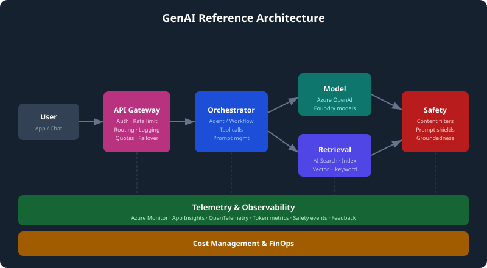
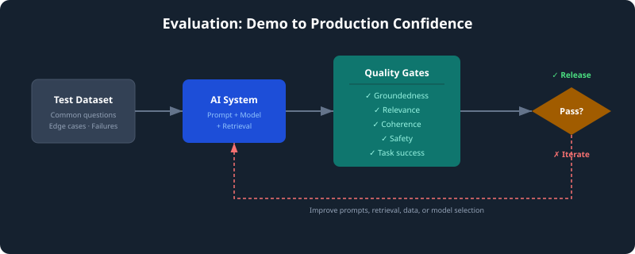
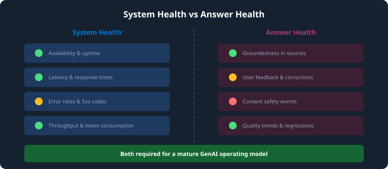
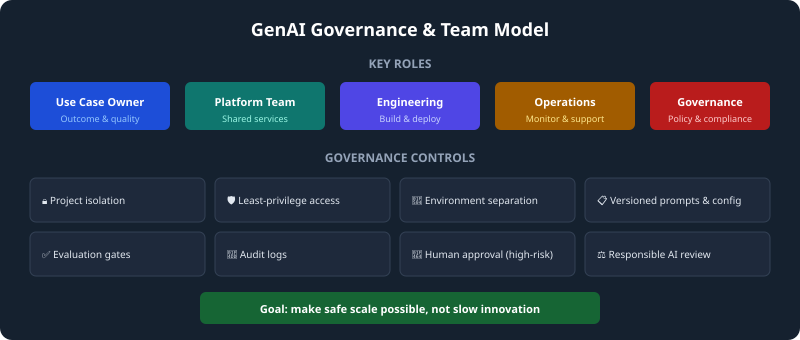

GenAIOps for Cloud Solution Architects
From prompt to production
Generative AI is easy to demonstrate and hard to operate. A useful prompt can create excitement in minutes, but enterprise adoption needs more than a prompt. It needs a repeatable way to design, evaluate, deploy, monitor, govern, and optimise AI-enabled systems.
That is the purpose of GenAIOps.
GenAIOps is the operating discipline for generative AI applications. It borrows useful thinking from DevOps and MLOps, but adapts it for foundation models, prompts, agents, retrieval, evaluation, safety, cost, and governance.
This guide is written for new Cloud Solution Architects and community learners. It is intentionally public-safe: no customer details, no confidential implementation notes, and no private workshop material.
The lifecycle
| Stage | What it means | CSA focus |
|---|---|---|
| Build | Create prompts, agents, orchestration, retrieval, and tool integrations. | Help the customer choose the simplest architecture that meets the use case. |
| Evaluate | Test quality, groundedness, relevance, safety, and regression. | Turn subjective demos into measurable quality gates. |
| Deploy | Release through managed endpoints, CI/CD, and gateway patterns. | Explain production controls, release paths, and rollback thinking. |
| Monitor | Observe latency, errors, token use, safety events, and answer quality. | Separate system health from answer health. |
| Govern | Apply identity, RBAC, policy, audit, responsible AI, and data boundaries. | Make safe scale possible through clear ownership and access. |
| Optimise | Improve cost, performance, model choice, context design, and user outcomes. | Help customers think about cost per successful outcome, not just cost per token. |

How GenAIOps differs from MLOps
MLOps often focuses on training, validating, deploying, and retraining custom models. GenAIOps often starts with foundation models that already exist. The work shifts toward operating the application layer around those models.
Key differences:
- Prompts and instructions become versioned assets.
- Retrieval quality matters as much as model quality.
- Agents need boundaries, tools, identity, and observability.
- Evaluation includes groundedness, relevance, coherence, safety, and task success.
- Monitoring must include behaviour and quality, not only uptime.
- Cost is strongly influenced by tokens, context length, model choice, and usage patterns.
Azure service mapping
| Need | Common Azure pattern |
|---|---|
| Foundation model access | Azure OpenAI Service or models available through Azure AI Foundry. |
| Experimentation and project workspace | Azure AI Foundry. |
| Retrieval over enterprise content | Azure AI Search and approved data sources. |
| Safety controls | Azure AI Content Safety and responsible AI process. |
| Identity and access | Microsoft Entra ID and role-based access control. |
| API control plane | Azure API Management as an AI gateway. |
| Observability | Azure Monitor, Application Insights, and OpenTelemetry traces. |
| Cost visibility | Azure Cost Management, Azure Monitor logs, and gateway analytics. |
Reference architecture pattern
A common production pattern looks like this:
- A user interacts with an application or chatbot.
- Requests pass through an API gateway for authentication, policy, logging, and throttling.
- An orchestrator or agent decides how to handle the request.
- Retrieval pulls relevant information from approved knowledge sources.
- The model generates a response grounded in the retrieved context.
- Safety checks and policy controls are applied.
- Telemetry captures latency, token use, errors, tool calls, safety flags, and feedback.
- Evaluation and monitoring feed continuous improvement.

Evaluation: the production confidence layer

Evaluation is the bridge between a promising demo and a trusted service.
A good evaluation set includes:
- Common user questions.
- Edge cases and ambiguous requests.
- Known failure examples.
- Unsafe or policy-sensitive prompts.
- Questions that require source grounding.
- Expected answer characteristics, not only exact answer strings.
Useful evaluation dimensions include:
- Groundedness: Is the answer supported by the provided sources?
- Relevance: Does the answer address the actual question?
- Coherence: Is the answer structured and internally consistent?
- Completeness: Does the answer include the necessary detail?
- Safety: Does the answer avoid unsafe, inappropriate, or policy-violating content?
- Task success: Did the user get closer to the intended outcome?
Monitoring: system health and answer health

Traditional monitoring answers questions like:
- Is the service available?
- What is the latency?
- What is the error rate?
- How much traffic is flowing?
GenAI monitoring also needs to ask:
- Are answers grounded in trusted sources?
- Are users repeatedly asking follow-up corrections?
- Are content safety events increasing?
- Are token costs changing unexpectedly?
- Are certain use cases failing more often than others?
- Are model, prompt, retrieval, or data changes causing regression?
APIM as an AI gateway
Azure API Management can act as a control plane for AI traffic. It is especially useful when multiple applications, teams, or models are involved.
Common gateway capabilities:
- Authentication and authorization.
- Rate limiting and quota enforcement.
- Routing across models, deployments, or regions.
- Failover and resilience patterns.
- Centralized logging.
- Policy enforcement.
- Usage analytics for showback or chargeback.
FinOps for GenAI
GenAI costs are driven by usage volume, model choice, input tokens, output tokens, context size, retrieval patterns, and rework caused by poor answers.
Cost levers include:
- Use smaller models for simple tasks.
- Reserve stronger models for complex reasoning.
- Shorten prompts and reduce unnecessary context.
- Cache common answers where appropriate.
- Use quotas and rate limits by app, team, or environment.
- Track cost by successful business outcome.
Governance and team model

GenAI projects combine models, prompts, data, tools, evaluations, and application code. That makes governance a practical engineering concern, not a paperwork exercise.
Suggested roles:
- Use case owner: defines business outcome and quality expectations.
- Platform team: provides secure reusable patterns and shared services.
- Engineering team: builds and deploys the application.
- Operations team: monitors reliability and supportability.
- Governance/risk team: defines policy, safety, audit, and compliance expectations.
Useful governance controls:
- Project isolation.
- Least-privilege access.
- Environment separation.
- Versioned prompts and configuration.
- Evaluation gates before release.
- Audit logs.
- Human approval for high-risk actions.
- Responsible AI review for sensitive use cases.
Customer discovery questions
Use these to move from AI enthusiasm to actionable architecture:
- What business outcome would make this use case worth scaling?
- Who owns the quality of the answer?
- Which data sources are trusted enough to ground responses?
- What happens when the AI is uncertain or wrong?
- Which users should have access to which information and tools?
- What would be an unacceptable failure?
- How will you measure answer quality before release?
- Who supports the solution after it goes live?
- How will cost be tracked by team, product, or use case?
- What needs to be reusable for the next AI use case?
Example use cases
| Use case | Pattern | Operating concern |
|---|---|---|
| Support knowledge assistant | Retrieval-augmented generation over approved content. | Groundedness, citations, freshness, feedback. |
| IT service desk triage | Agent classifies requests and calls ITSM tools. | Human approval, tool boundaries, audit logs. |
| Contact centre summarisation | Summarise calls and extract actions. | Quality sampling, privacy, cost per interaction. |
| Policy assistant | Answer questions from approved policy documents. | Source control, access boundaries, compliance review. |
| Engineering runbook assistant | Retrieve runbooks and prior incident notes. | Retrieval quality, escalation, operational telemetry. |
| Proposal drafting assistant | Draft from approved templates and case studies. | Review workflow, brand consistency, hallucination control. |
A practical pilot checklist
A good pilot should include:
- A named business owner.
- A clear user group.
- A narrow, valuable use case.
- Approved data sources.
- A test question set.
- Quality and safety criteria.
- Access control design.
- Monitoring plan.
- Cost visibility.
- Support and feedback process.
- A decision point for scale, stop, or redesign.